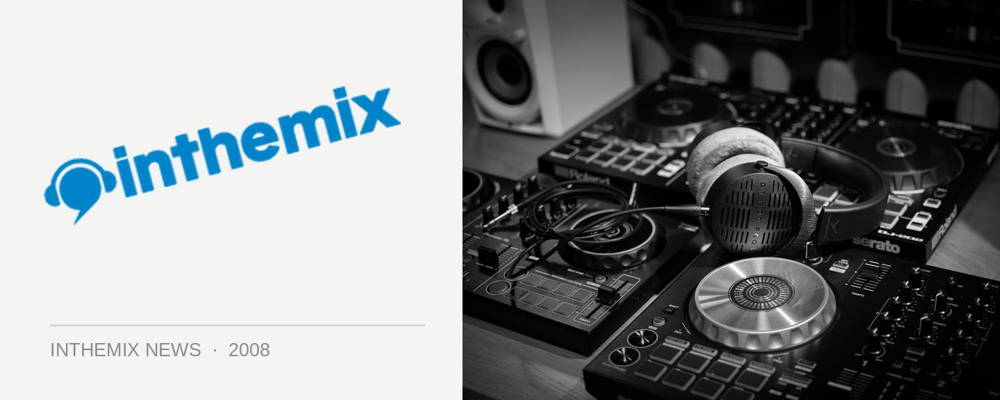

UTS Loft Bar gets a musical refresh
The UTS Loft Bar is readying itself to become Sydney’s hottest new space for quality underground music, positing itself as the place to be on Thursday and Friday nights. With a new program featuring 8 different nights spread across a monthly roster, it’s all set to go down from 5pm till midnight on Thursday evenings after work, and until the late hour of 2am on Friday nights. Expect DJs, live entertainment and more.
The rotated Thursday night events will be Reggae On A School Night (reggae, roots and dancehall), Flunked (a wide range of styles including funk, soul, indie, hip hop, electronica and more), an MC competition by the name Beatfigher that will rotate with the Feed Timing producers competition, as well as Wax’ed (DnB, grimme, dub step and hip hop night beats).
Fridays on the other hand will feature Proper, a ‘proper’ hip hop night some of the country’s best acts flying in for the action; the party mashup of Juiced with hip hop, breaks, Baltimore, bassline, garage, fidget, booty bass and more; Hang Up Your Hang Ups with Simon Caldwell and Harry Sounds providing some techno and left-of-centre house and disco beats; and finally, Fresh Up with its promise of “pure, natural, energy giving rhythm”.
Kicking off with the beginning of August, catch the fresh selections of underground tunage every Friday night at the UTS Loft Bar.